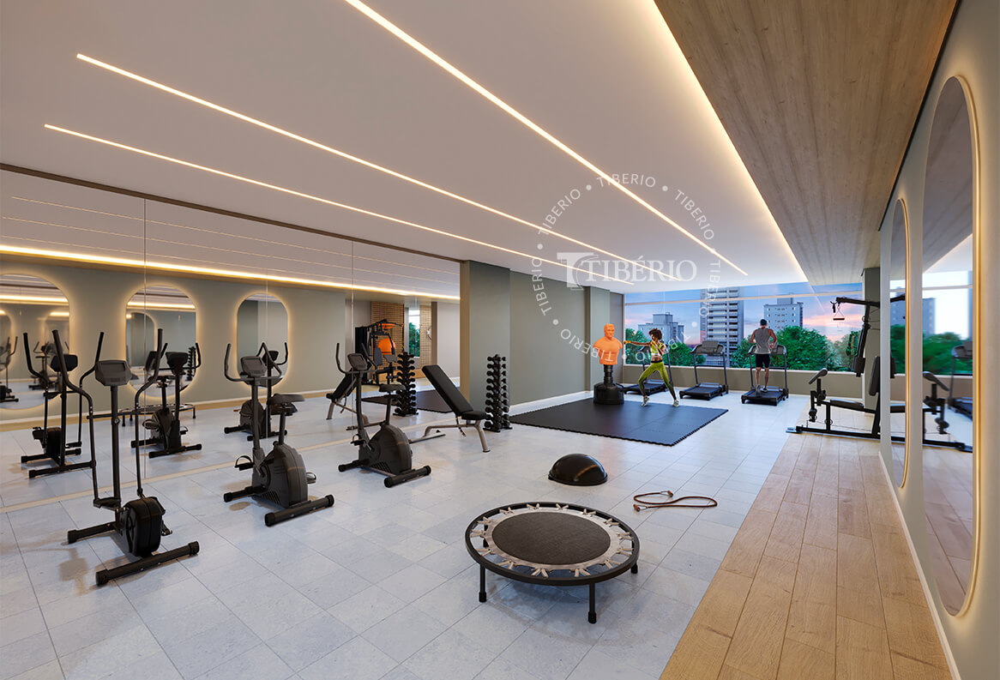
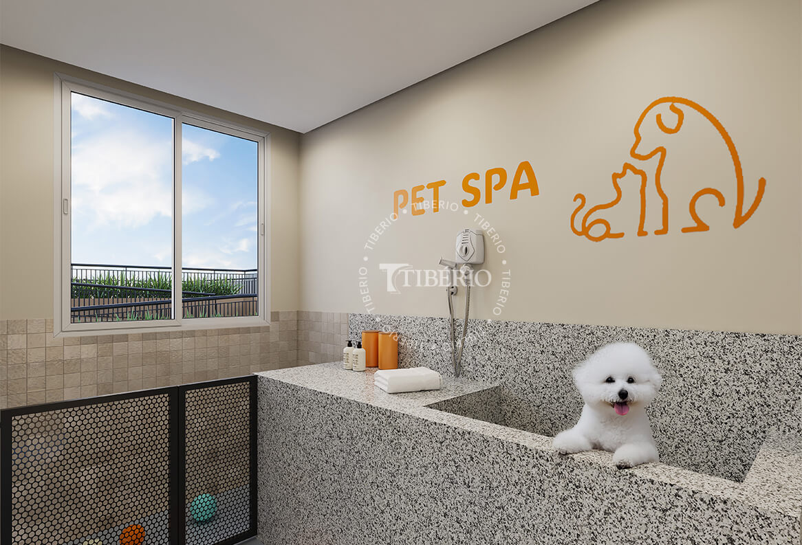

Galeria de Fotos do Sublime Pompeia



Conheça o Sublime Pompeia
O Sublime Pompeia reúne apartamentos amplos de 3 dormitórios com suíte, varanda gourmet com churrasqueira e duas vagas determinadas, oferecendo conforto, funcionalidade e excelente padrão construtivo em uma das regiões mais valorizadas da Zona Oeste de São Paulo.
O empreendimento foi pensado para famílias que desejam morar próximas ao Allianz Parque, Shopping Bourbon, SESC Pompeia, hospitais, escolas, supermercados e à futura estação Pompeia do Metrô.
Além da excelente localização, o condomínio oferece lazer completo, segurança e infraestrutura moderna para proporcionar qualidade de vida em todos os momentos.